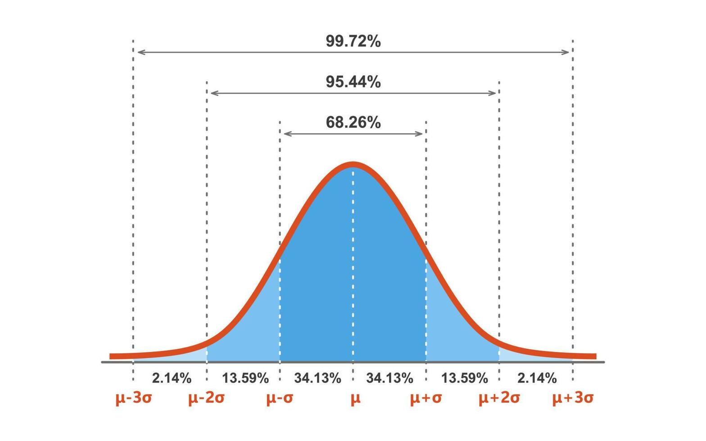

Compter, classer, prévoir : ces trois gestes, aussi vieux que la civilisation elle-même, sont au cœur de la statistique et des probabilités. Bien avant que ces mots n'existent, des peuples entiers dénombraient déjà leurs récoltes, leurs soldats et leurs habitants. Ce n'est pourtant que très récemment, à l'échelle de l'histoire humaine, que ces pratiques se sont transformées en véritables sciences, capables non seulement de décrire ce qui existe, mais aussi de prédire ce qui pourrait arriver. C'est cette double histoire — celle de la description des données (la statistique) et celle du hasard maîtrisé (les probabilités) — que ce cours te propose d'explorer.
Les plus anciens exemples de collecte systématique de données remontent à l'Antiquité. Les Babyloniens, les Égyptiens et les Chinois effectuaient déjà des recensements de population il y a plus de 4000 ans, principalement pour lever des impôts ou recruter des soldats. Le mot statistique lui-même vient du latin status (l'État) : à l'origine, il désignait simplement la collecte de données par et pour l'État — une pratique administrative, bien avant de devenir une science mathématique rigoureuse.
Un moment charnière survient en 1662, lorsque le marchand londonien John Graunt publie Natural and Political Observations Made upon the Bills of Mortality, un ouvrage qui analyse systématiquement les registres de décès de Londres. Graunt y découvre des régularités surprenantes : par exemple, la proportion de naissances de garçons et de filles reste étonnamment stable d'une année à l'autre. On considère souvent Graunt comme le père de la démographie — la première personne à avoir traité des données humaines avec une rigueur véritablement mathématique.
L'histoire des probabilités commence, de façon assez inattendue, autour d'une table de jeu. En 1654, un noble français féru de jeux de hasard, le chevalier de Méré, soumet à Blaise Pascal un problème qui le tracasse depuis longtemps : le problème des partis. Si une partie de dés est interrompue avant la fin, comment partager équitablement la mise entre les joueurs, selon leurs chances respectives de gagner à ce moment précis?
Pascal correspond alors avec Pierre de Fermat, et leurs échanges de lettres — aujourd'hui considérés comme l'acte de naissance officiel du calcul des probabilités — posent les fondations mathématiques permettant de quantifier précisément une chance, plutôt que de se fier à l'intuition seule. Ce qui n'était au départ qu'une curiosité pour résoudre des disputes de jeu est devenu, au fil des siècles, un outil essentiel dans des domaines aussi variés que l'assurance, la médecine, la finance et l'intelligence artificielle.
Le triangle de Pascal — ce triangle de nombres où chaque valeur est la somme des deux nombres au-dessus d'elle — n'a pas été inventé par Pascal! Il était déjà connu des mathématiciens perses, chinois et indiens plusieurs siècles auparavant. Pascal l'a cependant popularisé en Europe et en a fait un usage systématique pour résoudre des problèmes de dénombrement et de probabilités, ce qui explique pourquoi son nom lui est resté associé en Occident.
Au 19e siècle, l'astronome et mathématicien Carl Friedrich Gauss étudie les erreurs de mesure en astronomie et développe la fameuse courbe normale (ou courbe en cloche), qui décrit comment la plupart des mesures se regroupent autour d'une valeur centrale, avec de moins en moins de valeurs à mesure qu'on s'en éloigne. Cette courbe deviendra l'un des outils les plus puissants de toute la statistique moderne.

C'est aussi à cette époque que le Belge Adolphe Quetelet a l'idée audacieuse d'appliquer les méthodes statistiques non plus seulement aux étoiles ou aux dés, mais aux êtres humains eux-mêmes. Il invente le concept de l'« homme moyen » — une sorte de portrait statistique d'une population entière — et jette ainsi les bases de la statistique appliquée aux sciences sociales, à la santé publique et à l'économie.
Au 20e siècle, des chercheurs comme Ronald Fisher, Karl Pearson et Andreï Kolmogorov ont donné aux probabilités et à la statistique les fondations rigoureuses qu'on leur connaît aujourd'hui, transformant ces disciplines en un langage universel pour analyser l'incertitude. Aujourd'hui, la statistique et les probabilités sont partout : elles guident les sondages électoraux, les essais cliniques de nouveaux médicaments, les prévisions météorologiques, les algorithmes de recommandation en ligne et les systèmes d'intelligence artificielle. Ce cours te donnera les premiers outils de ce langage — une compétence de plus en plus incontournable dans le monde qui t'entoure.
- Le mot « statistique » vient du latin status (l'État), à l'origine lié aux recensements.
- John Graunt (1662) est considéré comme le père de la démographie moderne.
- Pascal et Fermat (1654) ont fondé le calcul des probabilités à partir d'un problème de jeu de dés.
- Gauss a développé la courbe normale; Quetelet a appliqué la statistique aux populations humaines.
- La statistique et les probabilités modernes sont omniprésentes dans la science, la technologie et la vie quotidienne.
Garde cette idée en tête tout au long du cours : derrière chaque tableau de données et chaque calcul de probabilité se cache une longue histoire d'êtres humains cherchant à mieux comprendre l'incertitude qui les entoure — et à en tirer des décisions plus éclairées.